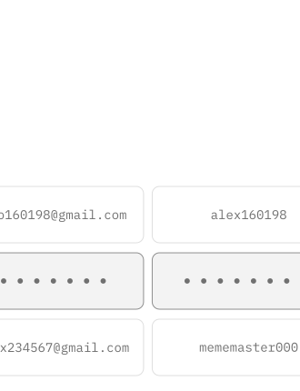
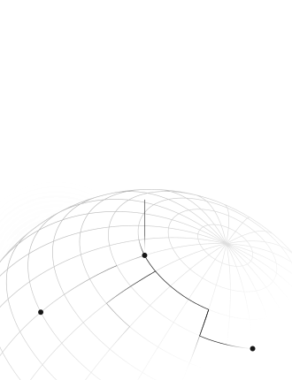
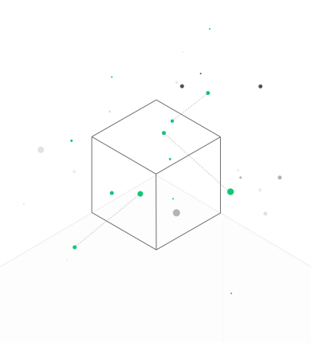
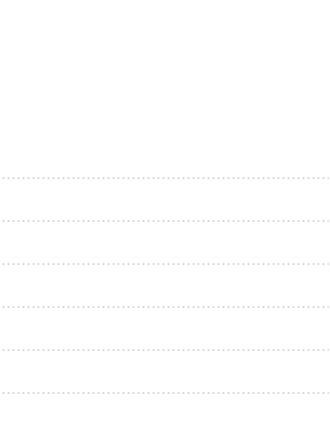
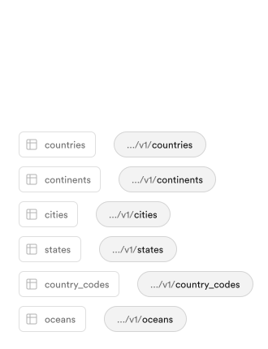

Pulled from supabase.com
Supabase product SVG study
These visuals use the actual SVG asset files from the Supabase homepage product cards. I kept them as local SVG files in supabase-svg-assets/ so you can open and inspect the source directly.
{kind=link}

Authentication
Open SVG source{kind=link}

Authentication active
Open SVG source{kind=link}

Edge Functions
Open SVG source{kind=link}

Realtime
Open SVG source{kind=link}

Vector
Open SVG source{kind=link}


Data APIs
Open main SVG source{kind=link}
Storage tile pattern
Asset strategy
Supabase uses a lot of normal <img> tags pointing at SVG files. The card stays simple, while the visual complexity lives inside each SVG asset.
Shared canvas
Most product art is drawn in a tall 330 x 430 coordinate space, which makes it easy to swap visuals into cards with identical cropping rules.
Light visual system
The style is mostly off-white backgrounds, low-contrast gray strokes, small green accents, and thin UI outlines. It feels technical without getting visually heavy.
Layering
The Data APIs card is a good pattern: one SVG provides subtle connector lines, and another provides the visible endpoint labels. Small files can be composed like UI layers.